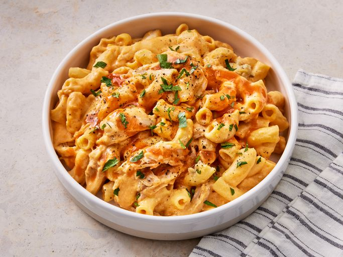

Buffalo Chicken

This Buffalo chicken mac and cheese recipe was first introduced to me at my local ballpark, and I thought it was a great idea! This is what I whipped up. Serve with celery sticks and beer. Let me know what you think.
Ingredients
- 1 (16 ounce) package elbow macaroni
- 1 rotisserie-roasted chicken
- 6 tablespoons butter
- 6 tablespoons all-purpose flour
- 3 cups milk
- 1 pinch ground black pepper
- 2 cups shredded Cheddar cheese
- 2 cups shredded Monterey Jack cheese
- ½ cup hot sauce (such as Frank's® Redhot®), or more to taste
- ½ cup crumbled gorgonzola cheese
Directions
- Making the beer batter: Combine flour, cornstarch, baking powder, and salt in a large bowl. Blend beer and egg in a separate bowl, then quickly stir into flour mixture until combined with a few lumps remaining.
- Making the white sauce: Mix together yogurt and mayonnaise in a medium bowl. Gradually stir in fresh lime juice until consistency is slightly runny. Season with jalapeño, capers, cayenne, oregano, cumin, and dill.
- Start fish tacos: Heat oil in a deep-fryer to 375 degrees F (190 degrees C).
- Dust fish pieces lightly with flour. Set aside.
- Dip floured fish pieces into beer batter. Set aside.
- Fry in hot oil until crisp and golden brown. Drain on paper towels. Lightly fry tortillas in hot oil until just crisped, but not too crisp. Drain on paper towels.
- Place fried fish in tortillas; top with shredded cabbage and white sauce.